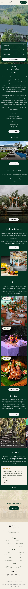
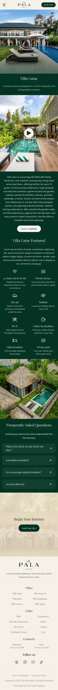
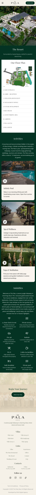

Desktop
Uses large-scale imagery and minimal interface to create an immersive first impression while guiding users through key content and booking actions.

The Pala Ubud is a digital experience design for a luxury villa resort in Ubud, built around the concept of “Sound of Silence”—a balance between nature, calmness, and understated luxury.
The challenge was to translate this atmosphere into a digital experience that not only showcases the beauty of the resort, but also guides users seamlessly from exploration to booking.
> The design focuses on creating a calm and immersive browsing experience through strong visual hierarchy, minimal layout, and carefully curated imagery—allowing users to explore naturally while maintaining clarity across key actions.
Uses large-scale imagery and minimal interface to create an immersive first impression while guiding users through key content and booking actions.
Translates the experience into a smooth vertical flow, enabling focused exploration and quick access to essential booking actions on mobile.



Users seek both clarity and emotional reassurance when exploring luxury stays, making visual storytelling and structured content essential to guide decisions.
Led the end-to-end design process, including concept direction, visual design, and responsive layout across desktop and mobile.
The result is a refined digital experience that captures the resort’s atmosphere while balancing immersive storytelling with clear navigation and conversion-focused interactions.